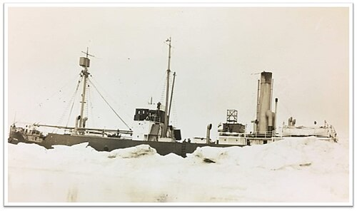

DOSSIER M48 // BEAUFORT SEA // 1931 onward
Baychimo: the abandoned Arctic cargo ship
[ MARITIME & GEOGRAPHIC MYSTERIES // SHIP ]


Event and chronology
The Hudson’s Bay Company cargo steamer Baychimo became trapped in ice near Alaska in 1931. Her crew abandoned the vessel, which later broke free and was sighted adrift on multiple occasions. The ship was never recovered; the last widely reported sightings came decades later.
What later accounts allege
Stories call Baychimo a ghost ship that sailed for years by itself or was deliberately hidden after carrying secret cargo. Some purported sightings lack dates, coordinates or independent witnesses and are repeated as if they form one continuous voyage.
Records, searches and conditions
Hudson’s Bay Company records, contemporary newspapers and Arctic patrol reports document the original entrapment, abandonment and early sightings. Later accounts become less verifiable; ice drift and wind can move an unpowered hull, but no confirmed modern wreck location exists.
Independent and contrary evidence
The ship was a known vessel abandoned in a known ice environment, not a vessel appearing from nowhere. Early sightings are compatible with drift between ice fields, while later undocumented accounts cannot establish that it remained afloat for decades.
What remains unknown
The ultimate sinking location and date are unknown, and several later sightings may refer to other vessels or mistaken reports. The sparse Arctic reporting network makes some sightings hard to check, so confidence should decline with distance from contemporary records.
Assessment
Baychimo’s initial abandonment and drift sightings are documented; a decades-long ghost voyage is not. A verifiable wreck or authenticated sighting log with coordinates and vessel identification would clarify its final fate; rumor chains do not.
Sources and limits
- Canadian Museum of History — SS Baychimo exhibitFormer case-specific museum account describes the known vessel; the exhibit may have been retired and this historic URL can redirect.
- Hudson’s Bay Company Archives — Baychimo company recordsRelevant corporate archive may hold abandonment and vessel files; collection locator does not authenticate later sightings.
- Canadian Encyclopedia — BaychimoCase-specific reference recounts abandonment and sightings; individual late reports are not all independently confirmed.